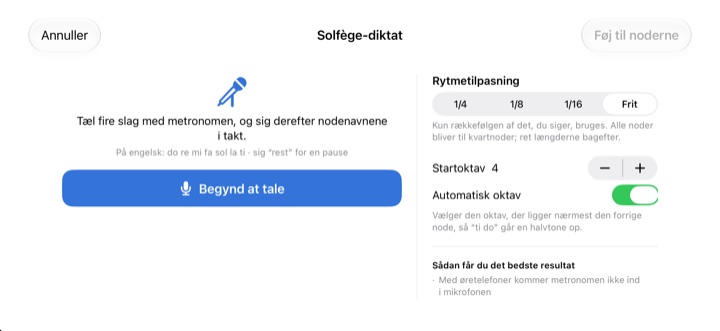
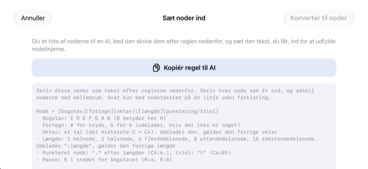

Stop med at tælle i hovedet.
Lyt i stedet.
Skriv de to takter, du snubler over, ind og tryk på afspil. Efter én takts indtælling spiller appen dem til metronomen med præcis den rytme og tonehøjde, der står.
Alle funktioner er gratis. Til iPhone og iPad.

Skriv et par noder, og lyt
Hold fingeren på nodesystemet og træk op eller ned for at skifte tone, og slip for at sætte noden. Tryk på Spil, så lyder det efter én takts indtælling. Der kommer lyd, så tjek lydstyrken.
Mistet tællingen midt i takten igen?
En punkteret ottendedel, så en sekstendedel og lige efter en triol. Du banker takten på knæet, og et sted midt i går det galt. Aftenen før korprøven er der sjældent et klaver ved hånden. I StaffSinger skal du bare skrive de to takter ind, så hører du præcis rytme og tonehøjde.
Rytme og tonehøjde præcis som skrevet
Efter én takts indtælling spiller musikken til metronomens klik, og noden, der klinger, lyser orange. Tempoet går fra 40 til 200 BPM, og taktarten kan være 4/4, 3/4, 2/4, 6/8, 2/2 eller 3/8.
Noder på samme slag klinger sammen som en akkord, og du kan skrive op til tre stemmer. G-nøgle, altnøgle, F-nøgle og faste fortegn er med.

Sig nodenavnene, så bliver de til noder
Efter fire klik fra metronomen siger du do re mi i takt, og noderne lander i nodesystemet. Rammer du slaget, kommer nodeværdien med, som fjerdedele, ottendedele eller sekstendedele. Til en pause siger du rest.
Sig nodenavnene på engelsk. Talen genkendes kun på enheden og gemmes ikke.

Giv nodebilledet til en AI, og indsæt svaret
Tryk på Kopiér regel til AI, giv den til en AI sammen med et foto af noderne, og indsæt den tekst, du får tilbage. Nodesystemet udfylder sig selv. Formatet står i tabellen nedenfor.
Du kan også fotografere papirnoderne, have billedet på skærmen og skrive af, mens du kigger.

Kom i gang i tre trin
- 1
Vælg de svære takter
Appen åbner med et tomt nodesystem på to takter.
- 2
Skriv noderne
Tryk i nodesystemet, eller spil på klavertangenterne.
- 3
Tryk på afspil
Indtælling og derefter afspilning med metronom.
Tekstformat til indsættelse
- C4:4
- C i oktav 4, fjerdedel (enstreget c er C4)
- D:8
- Uden oktav gælder den forrige
- F#4:8 · Bb4:4
- # for kryds, b for b
- E4
- Uden :nodeværdi gælder den forrige
- :1 · :2 · :4 · :8 · :16
- helnode, halvnode, fjerdedel, ottendedel, sekstendedel
- C4:4.
- punkteret node
- C4:8t
- triol
- R:4 · R:8
- pauser
Kopiér regel til AI i appen kopierer præcis disse instruktioner. Adskil noderne med mellemrum.
Alle funktioner er gratis
Gratis
- Indtastning i nodesystemet og klaver på to oktaver
- Afspilning med indtælling og metronom
- Akkorder og tre stemmer
- Faste fortegn og tre nøgler
- Diktering af nodenavne med stemmen
- Indsæt tekst og referencefoto
Støt udvikleren
- Send et lille drikkepengebeløb fra Indstillinger
- Drikkepenge låser ikke op for noget ekstra
Ikke et abonnement. Hver gang er en engangsbetaling.
Ingen reklamer og ingen konto.
Ofte stillede spørgsmål
Hvordan sætter jeg noder?
Vælg først nodeværdi i værktøjslinjen, og tryk så i nodesystemet i den højde, du vil have. Mens du holder, lyder tonen, og når du slipper, bliver noden sat. Med tastaturknappen åbner du et klaver på to oktaver.
Hvordan laver jeg en akkord?
Slå knappen Akkord til i værktøjslinjen, og tilføj noder. De stables oven på den valgte node og klinger samtidig.
Hvordan retter jeg en node?
Træk noden op eller ned for at ændre tonehøjden, eller til siden for at flytte den til et andet slag. Med en node valgt flytter ♯ ♭ den en halvtone og 8va en oktav.
Hvor ændrer jeg tempo og taktart?
I Indstillinger, sammen med nøgle og faste fortegn. Der slår du også metronom og indtælling til og fra.
Der kommer ingen lyd.
Tjek lydløs tilstand og medielydstyrken. Hvis det kun er metronomen, der mangler, så se efter, at den er slået til under Afspilningshjælp i Indstillinger.
Dikteringen blander noderne sammen.
Brug høretelefoner, så metronomen ikke kommer med i mikrofonen, og sig én node tydeligt pr. slag. En forkert node trækker du bare på plads.
Hvorfor skal appen bruge kameraet?
Kun til at fotografere papirnoder, som du har på skærmen som reference. Billederne forlader aldrig enheden. Uden adgang til kameraet kan du vælge et billede fra biblioteket.
Hvilke enheder virker den på?
iPhone og iPad med iOS 17 eller nyere. Brugerfladen er lavet til liggende format.
Bliver mine noder eller min stemme sendt nogen steder hen?
Nej. Noder, billeder og stemme bliver på enheden, og alt virker uden internet. Kun anonym brugsstatistik og nedbrudsrapporter sendes til iCloud for at forbedre appen.
Hvordan kontakter jeg dig?
Skriv til leeo@kakao.com, svaret kommer normalt inden for 2–3 hverdage. Fejl og idéer kan også sendes som issues på GitHub: M1zz/StaffSinger.
Spørgsmål eller kommentarer? Skriv til leeo@kakao.com.